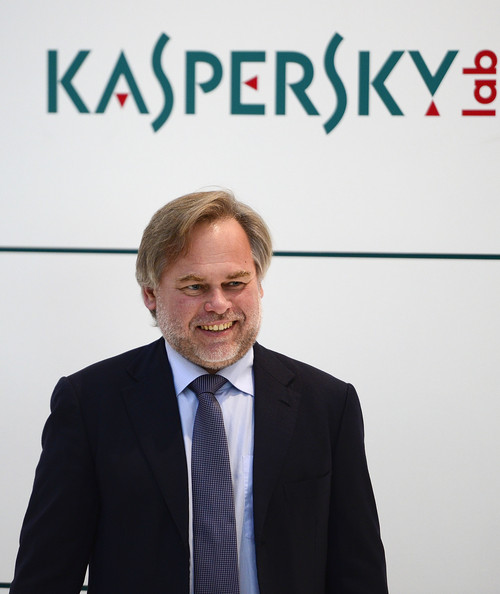
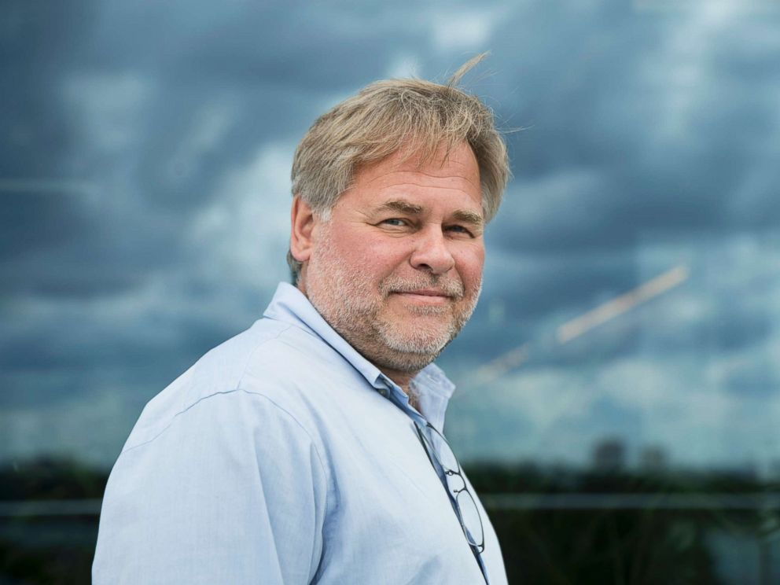

June 14th, 1946
About

Yevgeny Valentinovich Kaspersky (Russian: Евгений Валентинович Касперский; born 4 October 1965) is a Russian cybersecurity expert and the CEO of Kaspersky Lab, an IT security company with 4,000 employees. He cofounded Kaspersky Lab in 1997 and helped identify instances of government-sponsored cyberwarfare as the head of research. He has been an advocate for an international treaty prohibiting cyberwarfare.
Kaspersky graduated from The Technical Faculty of the KGB Higher School in 1987 with a degree in mathematical engineering and computer technology. His interest in IT security began when his work computer was infected with the Cascade virus in 1989 and he developed a program to remove it. Kaspersky helped grow Kaspersky Lab through security research and salesmanship. He became the CEO in 2007 and remains so as of 2018.
Kaspersky was born on 4 October 1965 in Novorossiysk, Russia. He grew up near Moscow, where he moved at age nine. His father was an engineer and his mother a historical archivist. As a child he developed an early interest in math and technology. He spent his free time reading math books and won second place in a math competition at age 14. When he was fourteen, Kaspersky began attending A.N. Kolmogorov boarding school, which is run by Moscow University and specializes in math. He was also a member of the youth division of the Communist Party of the Soviet Union.
At the age of 16, Kaspersky entered a five-year program with The Technical Faculty of the KGB Higher School, which prepared intelligence officers for the Russian military and KGB. He graduated in 1987 with a degree in mathematical engineering and computer technology. After graduating college, Kaspersky served the Soviet military intelligence service as a software engineer. He met his first wife Natalya Kaspersky at Severskoye, a KGB vacation resort, in 1987.
CEO

Kaspersky became CEO of Kaspersky Lab in 2007. According to a 2008 article in USA Today, he traveled to 20 to 30 countries per year promoting Kaspersky Lab products. In early 2009, CRN said his personality contributed to the company's growth from "relative obscurity to now nipping at the heels of its larger, better-known rivals." At the time, Kaspersky Lab was the fourth largest endpoint security company. It introduced new products for the enterprise market and expanded its channel programs.
In 2011, Kaspersky made a decision against taking the company public, saying it would make decision-making slow and prevent long-term R&D investments. This led to a series of high-level departures from the company, including his ex-wife and co-founder. Another series of departures occurred in 2014 due to disagreements over how to run the company.
Kaspersky Lab has defended itself against allegedly frivolous patent claims more aggressively than most IT companies. In 2012, it was the only one of 35 firms named in a suit by patent troll Information Protection and Authentication (IPAC) to take the case to court, rather than pay a fee. The case was ruled in Kaspersky's favor. Also in 2012, another company, Lodsys, sued Kaspersky and 54 other companies for patent infringement, and that case also resulted in the claimant dropping the case against Kaspersky. According to an article in TechWorld, the company's aversion to settling these claims is most likely because Eugene "just hates" patent trolls. In his blog he called them "parasites" and "IT racketeers."
Kaspersky himself is the co-author of several patents, including one for a constraint-and-attribute-based security system for controlling software component interaction.
As of 2015, Kaspersky Lab employed more than 2,800 people. As of 2012, Kaspersky was working on developing software to protect critical infrastructure, like power plants, from cyberwarfare.